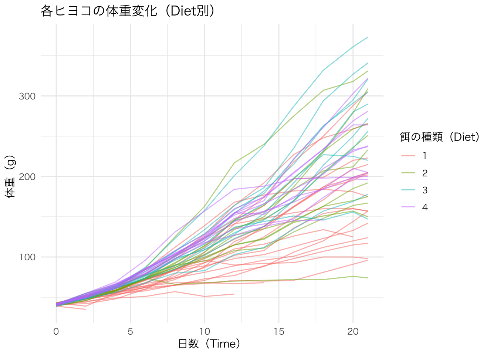
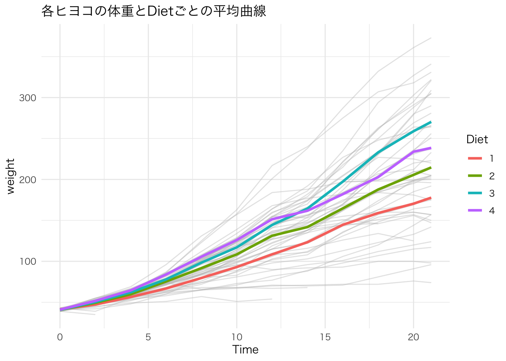
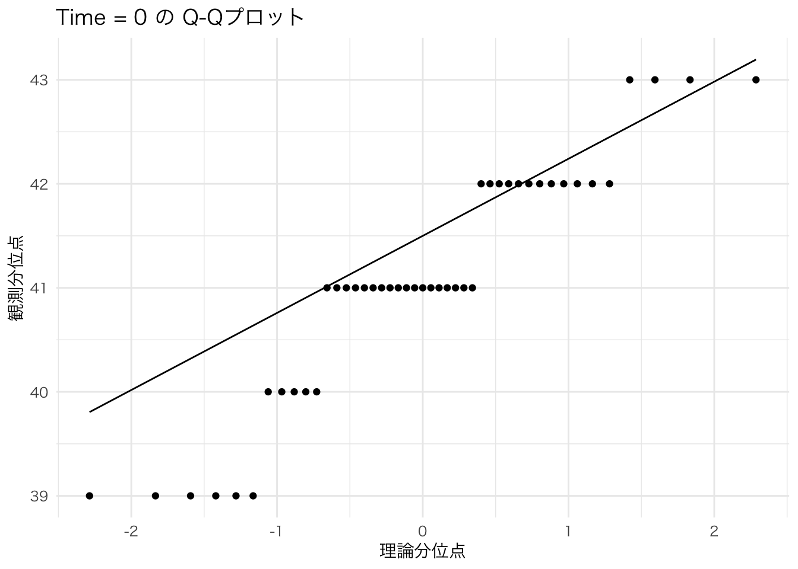

weight Time Chick Diet
Min. : 35.0 Min. : 0.00 13 : 12 1:220
1st Qu.: 63.0 1st Qu.: 4.00 9 : 12 2:120
Median :103.0 Median :10.00 20 : 12 3:120
Mean :121.8 Mean :10.72 10 : 12 4:118
3rd Qu.:163.8 3rd Qu.:16.00 17 : 12
Max. :373.0 Max. :21.00 19 : 12
(Other):506 分散分析 第3回：繰り返しのある分散分析(反復測定分散分析)
R
繰り返しのある分散分析(反復測定分散分析)
今回は繰り返しのある分散分析(反復測定分散分析)をやっていきます。 早速今回使用するデータを見ながら、 「そもそも”繰り返しのある”ってなによ」というところから、 確認してみましょう。
サンプルデータ
今回使用するデータはChickWeightです。 このブログで取り上げるのは初めてになると思います。
weight: 測定されたヒヨコの体重(数値)Time: 体重が測定された日数(数値)Chick: ヒヨコの個体番号(名義)Diet: ヒヨコに与えられた餌の種類(因子)
t検定での”繰り返しのある”という表現がありましたが、同一の調査対象に対する分析において使われることでした。 今回の例でも、ヒヨコの成長の記録のデータの分析に”繰り返しのある”分散分析を行うわけです。
最もよく使う場面が、事前(pre)・事後(pos)の比較ではないでしょうか。
体重が測定された日数がどうなっているかも見てみましょう。
1日おきに計測している感じですね。 最後だけは連続ですが。
分析計画
ChickWeight のデータを分散分析をしていきます。
独立変数は、Time と Diet で 従属変数が、weightです。
つまり、繰り返しのある二元配置分散分析ということになります。 与える餌の種類によるヒヨコの体重増加の違いを仮定した分析になります。
一気に分散分析をしても良いですが、データの可視化をして結果を想像しながら進められたら良いなと思います。
- データの可視化
- 前処理
- 繰り返しのある分散分析
- 結果の可視化
分析
実際に分析を進めていきましょう。
データの可視化
まずは餌の種類ごとに色分けしたヒヨコの体重増加を線グラフに表してみましょう。
library(ggplot2)
ggplot(ChickWeight, aes(x = Time, y = weight, group = Chick, color = Diet)) +
geom_line(alpha = 0.5) +
theme_minimal(base_family = "Hiragino Sans") +
labs(title = "各ヒヨコの体重変化（Diet別）",
x = "日数（Time）",
y = "体重（g）",
color = "餌の種類（Diet）")
なんか見づらいですね。 1匹ずつのグラフなので見辛いのかもしれません。 餌毎の平均線を強調して入れてみましょう。
ggplot(ChickWeight, aes(x = Time, y = weight, group = Chick)) +
geom_line(alpha = 0.4, color = "gray") +
stat_summary(aes(group = Diet, color = Diet), fun = mean, geom = "line", size = 1.2) +
theme_minimal(base_family = "Hiragino Sans") +
labs(title = "各ヒヨコの体重とDietごとの平均曲線")Warning: Using `size` aesthetic for lines was deprecated in ggplot2 3.4.0.
ℹ Please use `linewidth` instead.
これで大分見やすくなりましたね。 平均値では差がありそうですが、21日目での体重にはかなりの差がありそうです。 また、途中で何かしらの原因(死亡とか？)で21日前に切れているデータもありあそうです。
前処理
前処理として、データの加工を行なっていきます。 まずTimeが現在数値になっており、このままでは使用できないのでfactor(要因)型に変換しましょう。
これで、Timeがfactor(要因)型になりました。 しかし、このままでは12水準あり、多重比較やその後の解釈が大変になりそうです。 そこで今回は、開始ー中間ー最終の３地点のみでの比較にしましょう。
factor(要因)型だと処理がうまくいかないようなので、一旦数値型に戻しておきましょう。 factor型のままsubsetで特定の条件に一致するデータのみを取り出した場合に何が起きるのかは、別記事にしておきました。
いろいろと処理をしたので、現在のデータが意図した形になっているかを確認してみましょう。
サブセット後の基本構造を確認
Classes 'nfnGroupedData', 'nfGroupedData', 'groupedData' and 'data.frame': 144 obs. of 4 variables:
$ weight: num 42 93 205 40 103 215 43 99 202 42 ...
$ Time : Factor w/ 3 levels "0","10","21": 1 2 3 1 2 3 1 2 3 1 ...
$ Chick : Ord.factor w/ 50 levels "18"<"16"<"15"<..: 15 15 15 17 17 17 14 14 14 11 ...
$ Diet : Factor w/ 4 levels "1","2","3","4": 1 1 1 1 1 1 1 1 1 1 ... weight Time Chick Diet
Min. : 39.0 0 :50 13 : 3 1:55
1st Qu.: 42.0 10:49 9 : 3 2:30
Median :102.5 21:45 20 : 3 3:30
Mean :119.3 10 : 3 4:29
3rd Qu.:157.2 17 : 3
Max. :373.0 19 : 3
(Other):126 Time列が factor になっているか
[1] "factor"[1] TRUETime の水準を確認
[1] "0" "10" "21"
0 10 21
50 49 45 Chick が factor になっているか
[1] TRUE [1] "18" "16" "15" "13" "9" "20" "10" "8" "17" "19" "4" "6" "11" "3" "1"
[16] "12" "2" "5" "14" "7" "24" "30" "22" "23" "27" "28" "26" "25" "29" "21"
[31] "33" "37" "36" "31" "39" "38" "32" "40" "34" "35" "44" "45" "43" "41" "47"
[46] "49" "46" "50" "42" "48"さて、一気に確認しましたが、その中で気になることが1つあります。 それは、”Time の水準を確認”をした際に、欠損値が出ていることです。 繰り返しのある分散分析の場合は、データが完全であることが前提なので、欠損値があると分析時にエラーになってしまいます。 選択肢としては、下記があります - 欠損のあるデータを除外する - 欠損補填をする(推定値で補完) - 他の分析にする
ということで、今回は最も一般的な方法である欠損値の除外をしてしまいましょう。
Warning: パッケージ 'dplyr' はバージョン 4.2.3 の R の下で造られました
次のパッケージを付け加えます: 'dplyr' 以下のオブジェクトは 'package:stats' からマスクされています:
filter, lag 以下のオブジェクトは 'package:base' からマスクされています:
intersect, setdiff, setequal, unionさてデータを確認してみましょう。
[1] "0" "10" "21"
0 10 21
45 45 45 これで良い感じになりましたね。 では、ここからは正規性と等分散性の確認に入りましょう。
正規性と等分散性の確認
今回も正規性と等分散性の検定はサクッとです。
library(dplyr)
chick_complete %>%
group_by(Time) %>%
summarise(p_value = shapiro.test(weight)$p.value)# A tibble: 3 × 2
Time p_value
<fct> <dbl>
1 0 0.000752
2 10 0.465
3 21 0.869 Timeが0の場合の正規性に問題がありそうです。 Q-Qプロットで見てみましょう。
library(ggplot2)
ggplot(chick_complete %>% filter(Time == 0), aes(sample = weight)) +
stat_qq() +
stat_qq_line() +
theme_minimal(base_family = "Hiragino Sans") +
labs(title = "Time = 0 の Q-Qプロット",
x = "理論分位点", y = "観測分位点")
判断しづらいところですね。 一旦はこのまま進めましょう。
次は等分散性の確認です。
Bartlett test of homogeneity of variances
data: weight by Time
Bartlett's K-squared = 330.44, df = 2, p-value < 2.2e-16等分散性に問題ありですね。 これが論文であれば、分散分析をやめて他の分析に変更しないといけなくなりそうです。 線形混合モデルとかになるみたいですが、それはまた次回にしましょう。
今回は繰り返しのある分散分析のやり方を紹介したいので、この問題には目を瞑りましょう。 すみません。
繰り返しのある分散分析
問題を抱えつつ分析をしてみましょう。
繰り返しがある場合は、指定が少し面倒なので一度時間のみの１要因で3水準での分析をしてみましょう。
# Chick ごとに Time に沿って繰り返し測定されている構造を Error(Chick/Time) で指定しています。
aov_result <- aov(weight ~ Time + Error(Chick/Time), data = chick_complete)
summary(aov_result)
Error: Chick
Df Sum Sq Mean Sq F value Pr(>F)
Residuals 44 114242 2596
Error: Chick:Time
Df Sum Sq Mean Sq F value Pr(>F)
Time 2 721615 360808 238.6 <2e-16 ***
Residuals 88 133068 1512
---
Signif. codes: 0 '***' 0.001 '**' 0.01 '*' 0.05 '.' 0.1 ' ' 1時間による成長は当然のごとく出ますね。 繰り返し測定をしている要因をErrorを指定しているのがポイントです。
では、２要因の場合をやってみましょう。
Error: Chick
Df Sum Sq Mean Sq F value Pr(>F)
Diet 3 30604 10201 5.001 0.00478 **
Residuals 41 83637 2040
---
Signif. codes: 0 '***' 0.001 '**' 0.01 '*' 0.05 '.' 0.1 ' ' 1
Error: Chick:Time
Df Sum Sq Mean Sq F value Pr(>F)
Time 2 721615 360808 293.492 < 2e-16 ***
Time:Diet 6 32260 5377 4.374 0.000701 ***
Residuals 82 100808 1229
---
Signif. codes: 0 '***' 0.001 '**' 0.01 '*' 0.05 '.' 0.1 ' ' 1結果の見方はこれまでの分散分析と変わらないので、詳細は省きます(以前の分散分析の記事を参照)。 結果を要約します。 - 餌の種類の主効果あり - 時間による主効果あり - 餌と時間による交互作用あり
でした。 ここからは多重比較をしましょう。
多重比較
前回やった二要因分散分析では多重比較でTukeyHSD()を使用しましたが、繰り返しのある分散分析はこれが使えません。 繰り返しがあることをオプションで使えないようです。
そのため、Time × Diet の組み合わせを新しい要因として作成して1要因12水準の多重比較の分析に変えます。
組み合わせでの新しい要因の作成
chick_complete$group <- interaction(chick_complete$Time, chick_complete$Diet)
table(chick_complete$group)
0.1 10.1 21.1 0.2 10.2 21.2 0.3 10.3 21.3 0.4 10.4 21.4
16 16 16 10 10 10 10 10 10 9 9 9 これで新しい要因は作れたので、多重比較を行いましょう。
Tukey multiple comparisons of means
95% family-wise confidence level
Fit: aov(formula = weight ~ group, data = chick_complete)
$group
diff lwr upr p adj
10.1-0.1 55.68750000 10.069381 101.305619 0.0046278
21.1-0.1 136.18750000 90.569381 181.805619 0.0000000
0.2-0.1 -0.86250000 -52.875158 51.150158 1.0000000
10.2-0.1 66.93750000 14.924842 118.950158 0.0020618
21.2-0.1 173.13750000 121.124842 225.150158 0.0000000
0.3-0.1 -0.76250000 -52.775158 51.250158 1.0000000
10.3-0.1 75.53750000 23.524842 127.550158 0.0002339
21.3-0.1 228.73750000 176.724842 280.750158 0.0000000
0.4-0.1 -0.67361111 -54.435080 53.087858 1.0000000
10.4-0.1 85.32638889 31.564920 139.087858 0.0000343
21.4-0.1 196.99305556 143.231587 250.754525 0.0000000
21.1-10.1 80.50000000 34.881881 126.118119 0.0000023
0.2-10.1 -56.55000000 -108.562658 -4.537342 0.0207934
10.2-10.1 11.25000000 -40.762658 63.262658 0.9998829
21.2-10.1 117.45000000 65.437342 169.462658 0.0000000
0.3-10.1 -56.45000000 -108.462658 -4.437342 0.0212194
10.3-10.1 19.85000000 -32.162658 71.862658 0.9811669
21.3-10.1 173.05000000 121.037342 225.062658 0.0000000
0.4-10.1 -56.36111111 -110.122580 -2.599642 0.0310837
10.4-10.1 29.63888889 -24.122580 83.400358 0.7943625
21.4-10.1 141.30555556 87.544087 195.067025 0.0000000
0.2-21.1 -137.05000000 -189.062658 -85.037342 0.0000000
10.2-21.1 -69.25000000 -121.262658 -17.237342 0.0011729
21.2-21.1 36.95000000 -15.062658 88.962658 0.4361857
0.3-21.1 -136.95000000 -188.962658 -84.937342 0.0000000
10.3-21.1 -60.65000000 -112.662658 -8.637342 0.0087505
21.3-21.1 92.55000000 40.537342 144.562658 0.0000019
0.4-21.1 -136.86111111 -190.622580 -83.099642 0.0000000
10.4-21.1 -50.86111111 -104.622580 2.900358 0.0820969
21.4-21.1 60.80555556 7.044087 114.567025 0.0129598
10.2-0.2 67.80000000 10.097136 125.502864 0.0079020
21.2-0.2 174.00000000 116.297136 231.702864 0.0000000
0.3-0.2 0.10000000 -57.602864 57.802864 1.0000000
10.3-0.2 76.40000000 18.697136 134.102864 0.0012895
21.3-0.2 229.60000000 171.897136 287.302864 0.0000000
0.4-0.2 0.18888889 -59.095168 59.472946 1.0000000
10.4-0.2 86.18888889 26.904832 145.472946 0.0002290
21.4-0.2 197.85555556 138.571499 257.139612 0.0000000
21.2-10.2 106.20000000 48.497136 163.902864 0.0000007
0.3-10.2 -67.70000000 -125.402864 -9.997136 0.0080606
10.3-10.2 8.60000000 -49.102864 66.302864 0.9999974
21.3-10.2 161.80000000 104.097136 219.502864 0.0000000
0.4-10.2 -67.61111111 -126.895168 -8.327054 0.0116735
10.4-10.2 18.38888889 -40.895168 77.672946 0.9965974
21.4-10.2 130.05555556 70.771499 189.339612 0.0000000
0.3-21.2 -173.90000000 -231.602864 -116.197136 0.0000000
10.3-21.2 -97.60000000 -155.302864 -39.897136 0.0000072
21.3-21.2 55.60000000 -2.102864 113.302864 0.0701848
0.4-21.2 -173.81111111 -233.095168 -114.527054 0.0000000
10.4-21.2 -87.81111111 -147.095168 -28.527054 0.0001566
21.4-21.2 23.85555556 -35.428501 83.139612 0.9718800
10.3-0.3 76.30000000 18.597136 134.002864 0.0013184
21.3-0.3 229.50000000 171.797136 287.202864 0.0000000
0.4-0.3 0.08888889 -59.195168 59.372946 1.0000000
10.4-0.3 86.08888889 26.804832 145.372946 0.0002344
21.4-0.3 197.75555556 138.471499 257.039612 0.0000000
21.3-10.3 153.20000000 95.497136 210.902864 0.0000000
0.4-10.3 -76.21111111 -135.495168 -16.927054 0.0020987
10.4-10.3 9.78888889 -49.495168 69.072946 0.9999923
21.4-10.3 121.45555556 62.171499 180.739612 0.0000000
0.4-21.3 -229.41111111 -288.695168 -170.127054 0.0000000
10.4-21.3 -143.41111111 -202.695168 -84.127054 0.0000000
21.4-21.3 -31.74444444 -91.028501 27.539612 0.8233947
10.4-0.4 86.00000000 25.175841 146.824159 0.0003949
21.4-0.4 197.66666667 136.842508 258.490826 0.0000000
21.4-10.4 111.66666667 50.842508 172.490826 0.0000008組み合わせが多くて解釈するのが大変ですね。 こういう時に事前に作成したグラフなどで全体像を確認しておけば、どの値を特に見るべきかとかが分かります。 今回では、餌ごとの平均体重が時系列でクロスしている部分があれば、「最初はこの餌の方が成長が早いけど、途中からはこの餌の方がいいかも」みたいな考察に持っていける感じがします。
というか、時間的な成長を比較してもあまり意味がない気がします。
あまりデータの選択あが正しくなかったかもしれません。 申し訳ありません。
一旦やり方自体は共有できたかなと思います。 もっとまともなデータを探してきます。 では、今日はこの辺で。